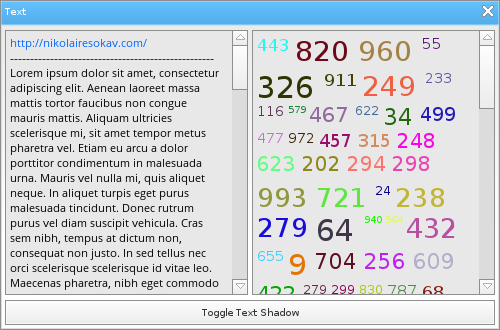

Löve Frames - The Text Object
Return to Index
Information
The text object creates wrappable, character colorable text.
Example Use
local frame = loveframes.Create("frame")
frame:SetName("Text")
frame:SetSize(500, 330)
frame:CenterWithinArea(unpack(demo.centerarea))
local list1 = loveframes.Create("list", frame)
list1:SetPos(5, 30)
list1:SetSize(243, 265)
list1:SetPadding(5)
list1:SetSpacing(5)
local text1 = loveframes.Create("text")
text1:SetLinksEnabled(true)
text1:SetDetectLinks(true)
text1:SetText(loremipsum)
text1:SetShadowColor(200, 200, 200, 255)
list1:AddItem(text1)
local colortext = {}
for i=1, 150 do
local r = math.random(0, 255)
local g = math.random(0, 255)
local b = math.random(0, 255)
table.insert(colortext, {color = {r, g, b, 255}, font = fonts[math.random(1, 30)]})
table.insert(colortext, math.random(1, 1000) .. " ")
end
local list2 = loveframes.Create("list", frame)
list2:SetPos(252, 30)
list2:SetSize(243, 265)
list2:SetPadding(5)
list2:SetSpacing(5)
local text2 = loveframes.Create("text", frame)
text2:SetPos(255, 30)
text2:SetLinksEnabled(true)
text2:SetText(colortext)
text2.OnClickLink = function(object, text)
print(text)
end
list2:AddItem(text2)
local shadowbutton = loveframes.Create("button", frame)
shadowbutton:SetSize(490, 25)
shadowbutton:SetPos(5, 300)
shadowbutton:SetText("Toggle Text Shadow")
shadowbutton.OnClick = function()
text1:SetShadow(not text1:GetShadow())
text2:SetShadow(not text2:GetShadow())
end

Event Callbacks
OnClickLink - Called when the user clicks a link in the object's text.
- Arguments passed: self [object], self link [string]
- Arguments passed: self [object], self link [string]
local text = loveframes.Create("text")
text:SetText("http://nikolairesokav.com")
text.OnClickLink = function(object, link)
print(link)
end
Formatting Text
Colors
The text object allows the developer to specify color formatted text within a table as the argument to SetText.
Below is an example of how to color format text with the text object:
Line breaks
local text = { {color = {255, 0, 0, 255}}, "Red ", {color = {0, 255, 0, 255}}, "Green ", {color = {0, 0, 255, 255}}, "Blue" }
object:SetText(text)
To use line breaks in your text you can use one of these methods:
-- singleline string linebreak
object:SetText("Text with a \n line break")
-- multiline string linebreak
local text =
[[
Text with a
line break
]]
object:SetText(text)
Note that there must be a space before and after each line break character for the text to format properly.
Methods
SetText - Sets the object's text
- Note: The argument can be a string, number, or a table of color formatted text. More information on formatted text can be found toward the top of this page.
- Returns 1 value: text [string]
- Returns 1 value: text [table]
- Note: This function returns a table containing both the object's text and data containing how certain parts of that text should be colored.
- Note: This method is used by the object internally. You should not use it unless you know what you are doing.
- Note: Set to 0 to disable text wrapping
- Returns 1 value: max width [number]
- Returns 1 value: font [font]
- Returns 1 value: lines [number]
- Returns 1 value: formatted text [table]
- Returns 1 value: ignore newlines [bool]
- Note: Enabling shadows on the text object can be very expensive
- Returns 1 value: shadow enabled [bool]
- Returns 2 values: x offset [number], y offset [number]
- Returns 1 value: shadowcolor [table]
- Returns 1 value: defaultcolor [table]
- Returns 1 value: links_enabled [bool]
- Returns 1 value: detect_links [bool]
- Note: The argument can be a string, number, or a table of color formatted text. More information on formatted text can be found toward the top of this page.
object:SetText(text[string or number or table])GetText - Gets the object's text
- Returns 1 value: text [string]
local text = object:GetText()GetFormattedText - Gets the object's formatted text
- Returns 1 value: text [table]
- Note: This function returns a table containing both the object's text and data containing how certain parts of that text should be colored.
local formatted_text = object:GetFormattedText()DrawText - Draws the object's text
- Note: This method is used by the object internally. You should not use it unless you know what you are doing.
object:DrawText()SetMaxWidth - Sets the object's maximum width. The object will wrap its text if it exceeds it's maximum width.
- Note: Set to 0 to disable text wrapping
object:SetMaxWidth(width[number])GetMaxWidth - Gets the object's max width
- Returns 1 value: max width [number]
local maxwidth = object:GetMaxWidth()SetFont - Sets the object's font
object:SetFont(font[font])GetFont - Gets the object's font
- Returns 1 value: font [font]
local font = object:GetFont()GetLines - Gets the number of lines the object's text uses
- Returns 1 value: lines [number]
local lines = object:GetLines()GetFormattedText - Gets the object's formatted text
- Returns 1 value: formatted text [table]
local formattedtext = object:GetFormattedText()SetIgnoreNewlines - Sets whether the object should ignore \n while formatting it's text
object:SetIgnoreNewlines(ingorenewlines[bool])GetIgnoreNewlines - Gets whether the object should ignore \n while formatting it's text
- Returns 1 value: ignore newlines [bool]
local ignorenewlines = object:GetIgnoreNewlines()SetShadow - Sets whether or not the object should draw it's text twice to create a "shadow" effect
- Note: Enabling shadows on the text object can be very expensive
object:SetShadow(shadow[bool])GetShadow - Gets whether or not the object has shadow drawing enabled
- Returns 1 value: shadow enabled [bool]
local shadow = object:GetShadow()SetShadowOffsets - Sets the x and y offsets of the object's shadow
object:SetShadowOffsets(xoffset[number], yoffset[number])GetShadowOffsets - Gets the x and y offsets of the object's shadow
- Returns 2 values: x offset [number], y offset [number]
local offsetx, offsety = object:GetShadowOffsets()SetShadowColor - Sets the color of the object's shadow
object:SetShadowColor(r[number], g[number], b[number], a[number])GetShadowColor - Gets the color of the object's shadow
- Returns 1 value: shadowcolor [table]
local color = object:GetShadowColor()SetDefaultColor - Sets the default color of the object's text
object:SetDefaultColor(r[number], g[number], b[number], a[number])GetDefaultColor - Gets the default color of the object's text
- Returns 1 value: defaultcolor [table]
local defaultcolor = object:GetDefaultColor()SetLinksEnabled - Sets whether or not links can be clicked
object:SetLinksEnabled(links_enabled[bool])GetLinksEnabled - Gets whether or not links can be clicked
- Returns 1 value: links_enabled [bool]
local links_enabled = object:GetLinksEnabled()SetDetectLinks - Sets whether or not the object will look for links in its text
object:SetDetectLinks(detect_links[bool])GetDetectLinks - Gets whether or not the object will look for links in its text
- Returns 1 value: detect_links [bool]
local detect_links = object:GetDetectLinks()